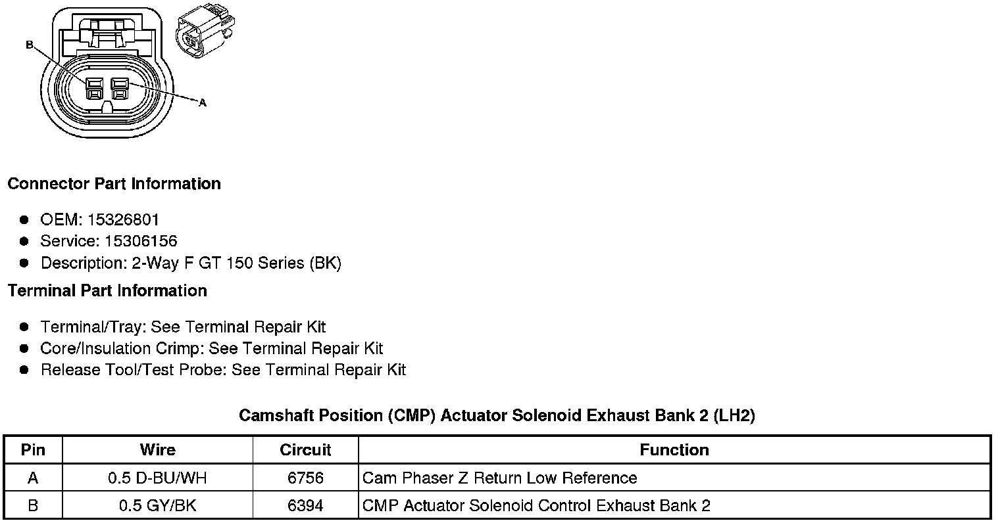
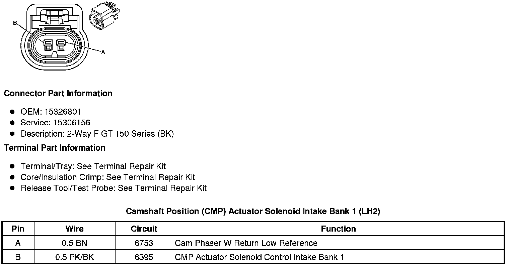
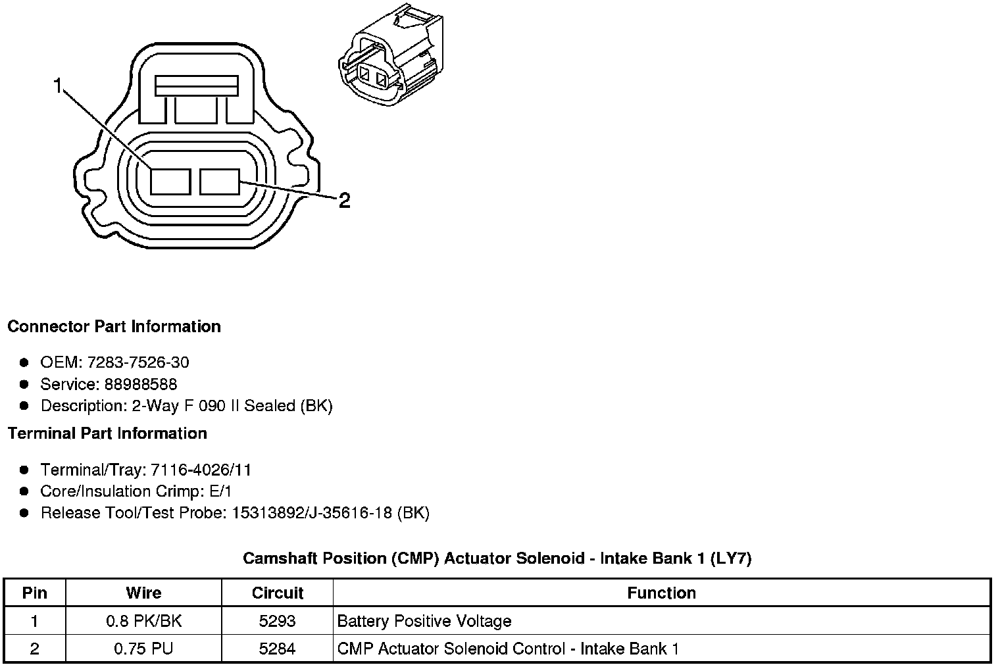
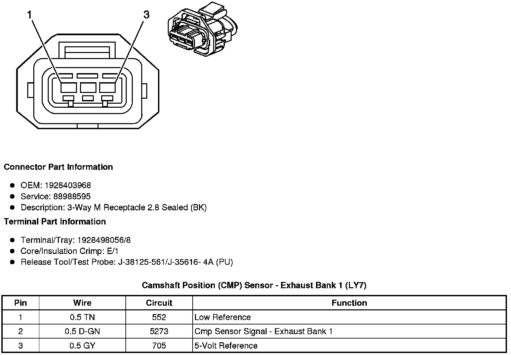
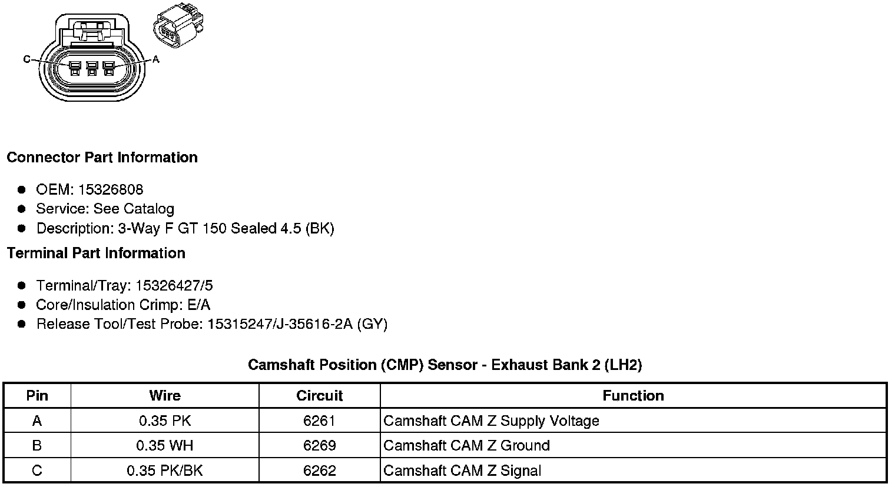
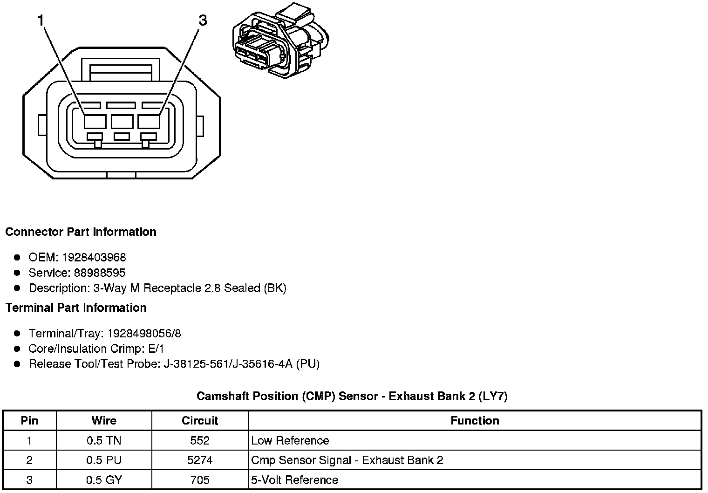
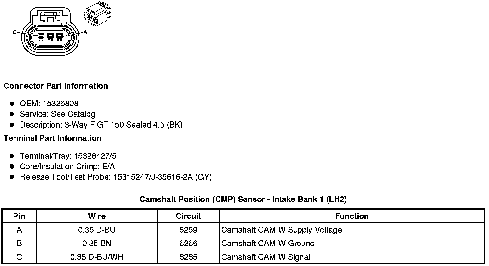

Camshaft Position Sensor
Component Connector End Views
Camshaft Position (CMP) Actuator Solenoid Exhaust Bank 1 (LH2 - Gas, 8 Cylinder, 4.6L, SFI, V8, DOHC, HO)

Camshaft Position (CMP) Actuator Solenoid - Exhaust Bank 1 (LY7 - Gas, 6 Cylinder, 3.6L, SFI, V6)
Camshaft Position (CMP) Actuator Solenoid Exhaust Bank 2 (LH2 - Gas, 8 Cylinder, 4.6L, SFI, V8, DOHC, HO)

Camshaft Position (CMP) Actuator Solenoid - Exhaust Bank 2 (LY7 - Gas, 6 Cylinder, 3.6L, SFI, V6)
Camshaft Position (CMP) Actuator Solenoid Intake Bank 1 (LH2 - Gas, 8 Cylinder, 4.6L, SFI, V8, DOHC, HO)

Camshaft Position (CMP) Actuator Solenoid - Intake Bank 1 (LY7 - Gas, 6 Cylinder, 3.6L, SFI, V6)

Camshaft Position (CMP) Actuator Solenoid Intake Bank 2 (LH2 - Gas, 8 Cylinder, 4.6L, SFI, V8, DOHC, HO)
Camshaft Position (CMP) Actuator Solenoid - Intake Bank 2 (LY7 - Gas, 6 Cylinder, 3.6L, SFI, V6)
Camshaft Position (CMP) Sensor - Exhaust Bank 1 (LH2 - Gas, 8 Cylinder, 4.6L, SFI, V8, DOHC, HO)
Camshaft Position (CMP) Sensor - Exhaust Bank 1 (LY7 - Gas, 6 Cylinder, 3.6L, SFI, V6)

Camshaft Position (CMP) Sensor - Exhaust Bank 2 (LH2 - Gas, 8 Cylinder, 4.6L, SFI, V8, DOHC, HO)

Camshaft Position (CMP) Sensor - Exhaust Bank 2 (LY7 - Gas, 6 Cylinder, 3.6L, SFI, V6)

Camshaft Position (CMP) Sensor - Intake Bank 1 (LH2 - Gas, 8 Cylinder, 4.6L, SFI, V8, DOHC, HO)

Camshaft Position (CMP) Sensor - Intake Bank 1 (LY7 - Gas, 6 Cylinder, 3.6L, SFI, V6)
Camshaft Position (CMP) Sensor - Intake Bank 2 (LH2 - Gas, 8 Cylinder, 4.6L, SFI, V8, DOHC, HO)
Camshaft Position (CMP) Sensor - Intake Bank 2 (LY7 - Gas, 6 Cylinder, 3.6L, SFI, V6)